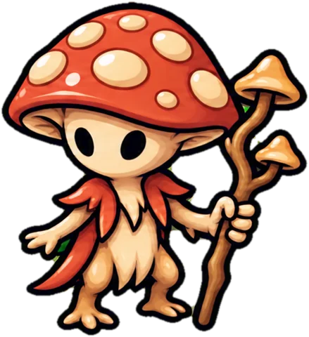

 GrassPoison
GrassPoisonTap a stage to read its story.
Sporekin is a small upright mushroom-person wearing a broad red cap speckled with cream dots. Its body is wrapped in a tattered brown cloak of dried leaf-material, and it carries a tall wooden staff nearly twice its own height. It wanders the dark forest's floor with the purposeful shuffle of someone who knows exactly where they are going even when they don't. Sporekin releases tiny puffs of orange spore from under its cap when excited, which hang in the air like punctuation marks after each step.
Field note: Sporekin's spore-puffs are mildly luminescent - a trail of them in the dark forest glows faint orange for up to six minutes.
Dark Forest. Sporekin and its family are found in the Dark Forest. See everyone who lives there.
Share a Bond Food that matches its types to become friends. Sporekin loves:
A Bond Food is not a trick. It joins your spirit with the Kimuro's spirit, and only when it chooses you.
Print the Kimuro adventure packs: mazes, cards, a board game and Bond Mark medals.
See the printable packs